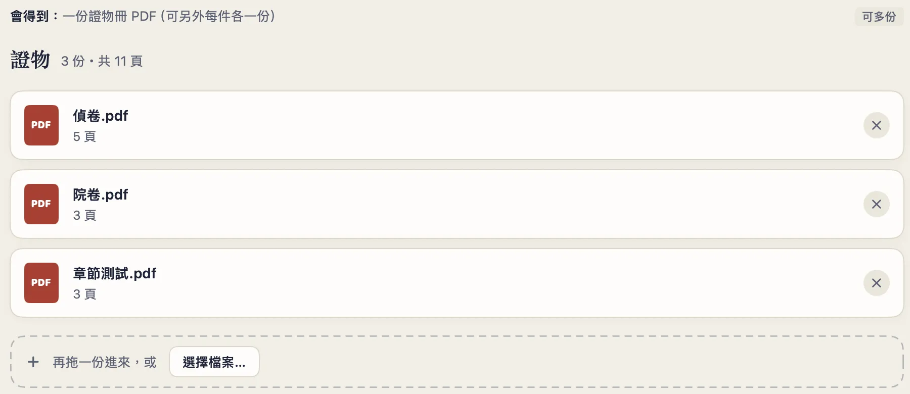
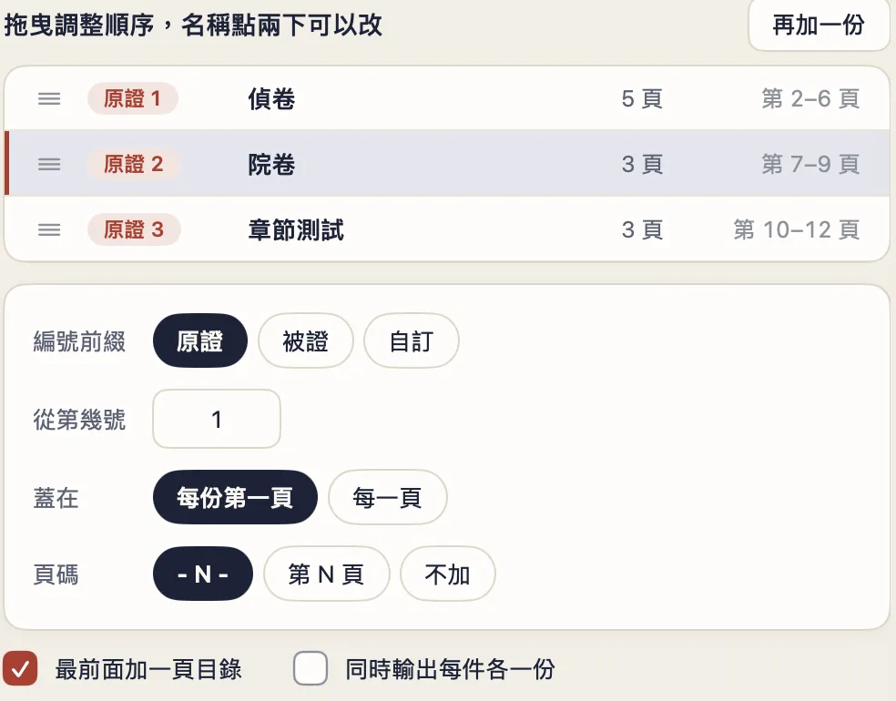
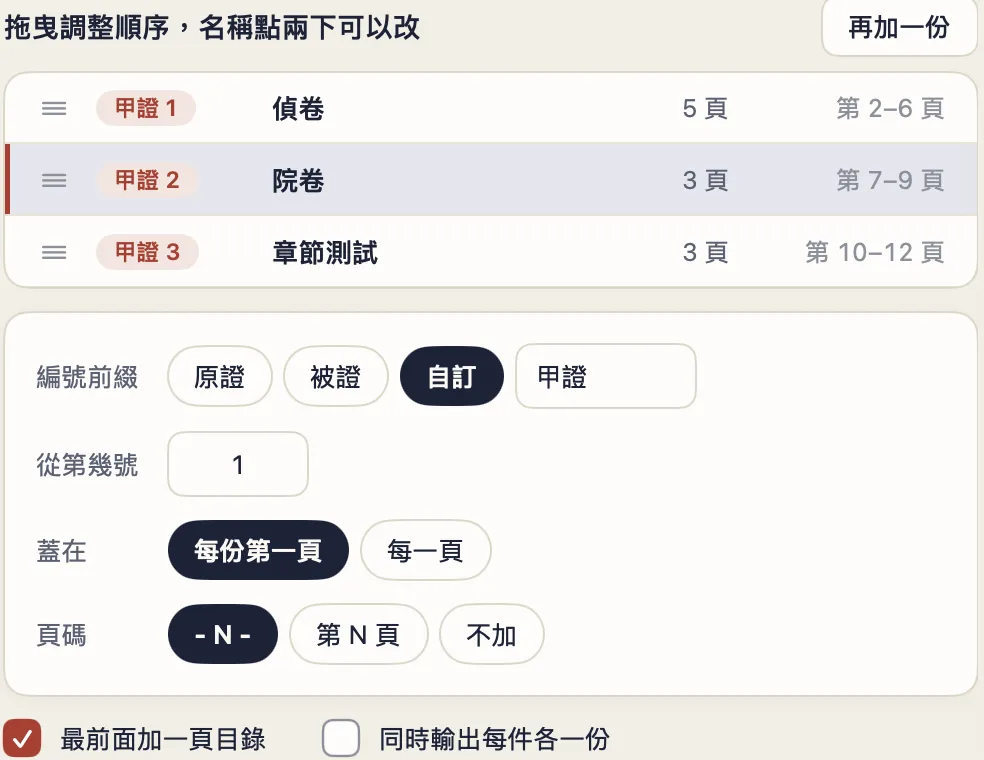
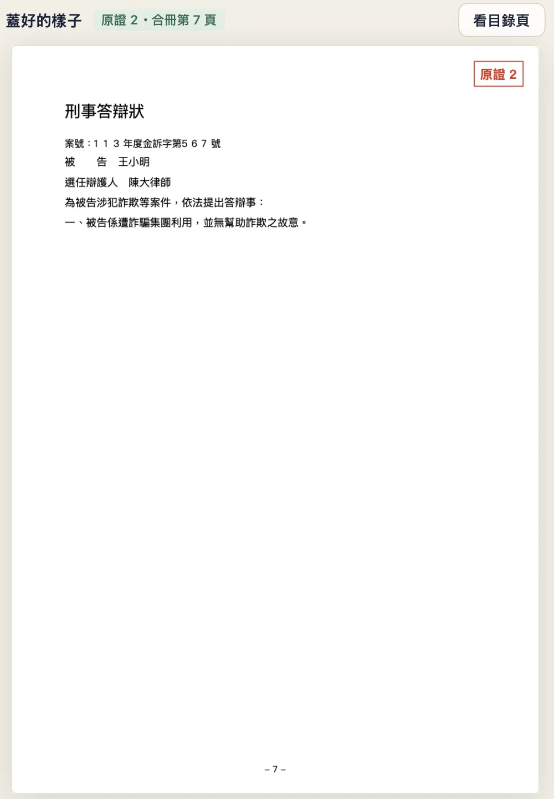
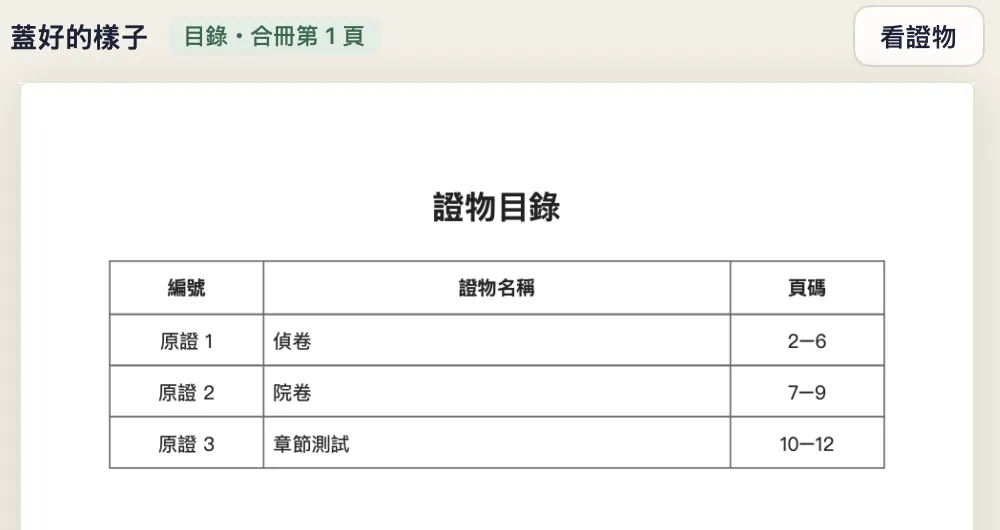
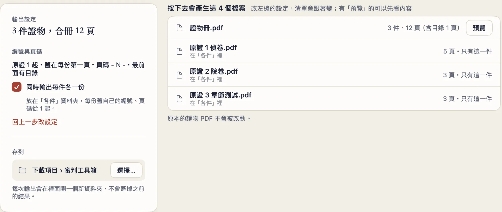

把證物編號、合成一冊並加目錄：證物冊教學
書狀要附證物時，常要一件一件蓋編號、排順序、做目錄、編頁碼，改一次順序就要全部重來。「證物冊」把這些設定放在同一個畫面，右邊直接顯示蓋好的樣子，最後輸出一份證物冊 PDF。
這個工具做什麼
「證物冊」在首頁的「遞狀與交付」那一組（Mac 也可以按 ⌘8）。流程是：放入證物 › 排順序與編號 › 輸出。
- 一份 PDF 就是一件證物。
- 每件證物的第一頁（或每一頁）右上角蓋上「原證 1」這類編號。
- 合成一冊，最前面加一頁證物目錄，全冊加上連續頁碼和書籤。
- 需要的話，另外每件各存一份。
原本的證物 PDF 不會被改動。頁面內容原樣保留，編號與頁碼是疊上去的。這篇用三份合成的示範檔（偵卷、院卷、章節測試）當證物。
第一步：放入證物
點「證物冊」，把證物 PDF 拖進來，或按「選擇檔案…」。順序下一步可以再調，可以一份一份拖，也可以一次選好幾份。

- 放錯的按該列右邊的 ✕ 拿掉。
- 有開啟密碼的檔案，放進來時會問密碼。
按右上角的「下一步：排順序與編號」。
第二步：排順序、改名稱
左上是證物清單，每一列依序是：把手、編號、證物名稱、頁數，以及這一件在合冊裡的頁碼範圍。頁碼範圍已經算進最前面的目錄頁，就是輸出後印在頁面上的頁碼。

- 排順序：按住列左邊的把手上下拖。編號依清單順序自動重排。
- 改名稱：在名稱上點兩下，或按右鍵選「改名稱」。名稱預設是檔名，會用在目錄、書籤和每件各一份的檔名，例如把「偵卷」改成「起訴書」。
- 移除：按右鍵選「移除這一件」。
- 補一件：按「再加一份」。
右上角隨時寫著「N 件證物，合冊 N 頁」。
編號與頁碼的設定
清單下面是四項設定：
- 編號前綴：「原證」「被證」，或「自訂」後自己填，例如「甲證」「聲證」。前綴與號碼中間有一個空白（原證 1）。
- 從第幾號：預設 1。補提證物要接續前一次的編號時，例如從 8 開始，就填 8。
- 蓋在：「每份第一頁」或「每一頁」。
- 頁碼：「- N -」「第 N 頁」或「不加」。頁碼印在每頁下方中間，從目錄頁開始連續編。

再下面兩個勾選：「最前面加一頁目錄」（預設勾）與「同時輸出每件各一份」。
看蓋好的樣子與目錄
右邊「蓋好的樣子」是 App 實際做一份證物冊後顯示出來的，跟輸出的結果相同。點左邊的一件，右邊顯示那一件在合冊裡的第一頁，上方標著「原證 2・合冊第 7 頁」。

按「看目錄頁」切到目錄，再按「看證物」切回來。

編號框底下有白底，原頁右上角那個位置的內容會被蓋住。證物的右上角有重要的字時，請在這裡先看一下。
確認後按「下一步：輸出」。
第三步：輸出
左邊寫著目前的編號與頁碼設定，可以在這裡勾「同時輸出每件各一份」；要改其他設定，按「回上一步改設定」。右邊列出會產生的檔案。

- 證物冊.pdf：寫著幾件、幾頁、含目錄幾頁，有「預覽」可以一頁一頁翻。
- 每件各一份（有勾時）：檔名是「編號 名稱.pdf」，例如「原證 1 偵卷.pdf」，放在「各件」資料夾。每份蓋自己的編號，頁碼從 1 起，沒有目錄。
按右上角的「開始輸出 N 個檔案」。
檔案存在「下載項目 › 審判工具箱」底下新開的資料夾（例如「原證 1 證物冊」），也可以在輸出前用「存到 › 選擇…」換位置。
證物冊裡有什麼
- 目錄頁：A4 直式，標題「證物目錄」，表格是編號、證物名稱、頁碼。證物多到一頁放不下時接續下一頁，標題加「（續）」，表頭每頁重複。名稱太長會換行。
- 頁碼：全冊連續，含目錄頁。目錄上的頁碼範圍就是印在頁面上的頁碼。
- 書籤：「證物目錄」與每一件（例如「原證 1 偵卷」）。證物原本有書籤的，掛在那一件的下一層。
在 iPhone・iPad 上
設定相同。iPhone 上排順序是用每列右邊的上下箭頭，點名稱可以改；清單、設定、蓋好的樣子由上往下排。「下一步」等按鈕在畫面下方，輸出的檔案在「檔案」App 的「我的 iPhone › 審判工具箱」。細節在在 iPhone・iPad 上使用那篇。
做不到的事／要注意
常見問題
編號可以從 8 開始嗎？
可以。在「從第幾號」填 8，第一件就是「原證 8」，後面依序接下去。
可以用「被證」或「甲證」嗎？
可以。編號前綴可以選「原證」「被證」，或選「自訂」自己填，例如「甲證」。
除了合冊，可以每件各存一份嗎？
可以。勾「同時輸出每件各一份」，每件另外存在「各件」資料夾，蓋自己的編號，頁碼從 1 起。